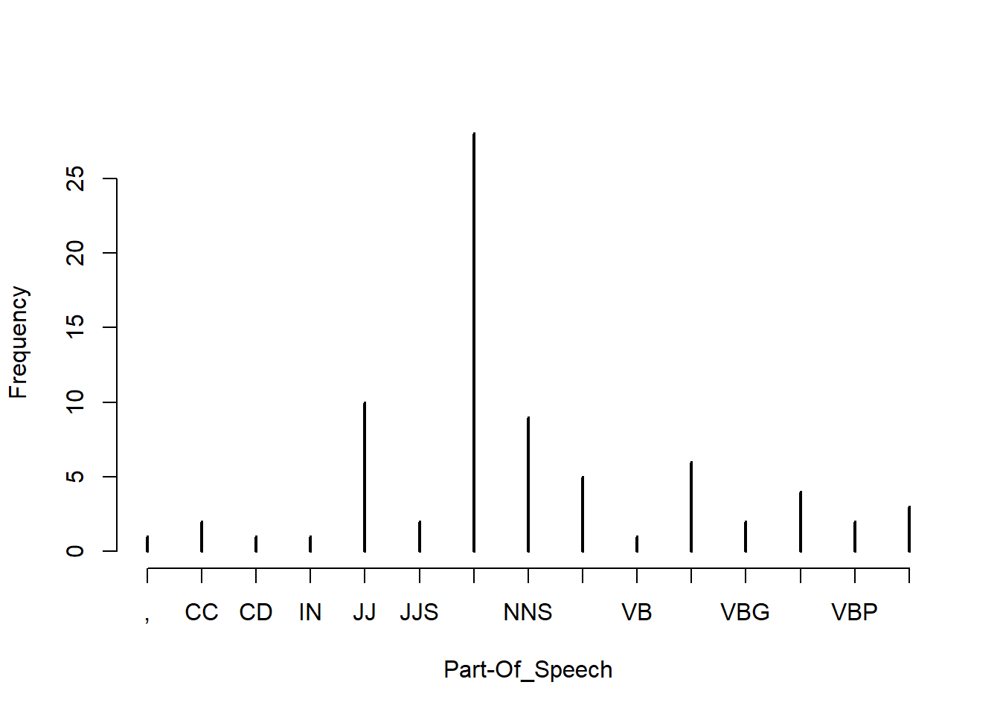
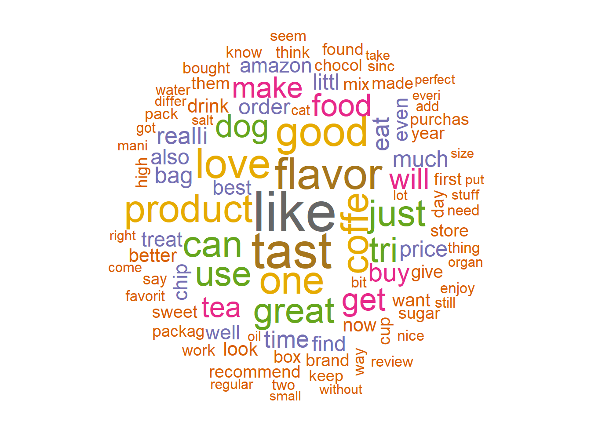

Text mining = turn text into data analysis
Check : - https://www.tidytextmining.com/index.html - Natural language processing (NLP)
- 1. Decompose the document D into individual sentences and use these sentences to form the candidate sentence set S and set k = 1.
- 2. Construct the terms by sentences matrix A for the document D.
- 3. Perform the SVD on A to obtain the singular value matrix, and the right singular vector matrix V^t. In the singular vector space, each sentence i is represented by the column vector.
- 4. Select the k'th right singular vector from matrix V^t.
- 5. Select the sentence that has the largest index value with the k'th right singular vector and include it in the summary.
- 6. If k reaches the predefined number, terminate the operation otherwise, increment k by 1 and go back to Step 4- Term frequency counts the number of occurrences of a term t in a document.
- Inverse document frequency : $ idf = log_2 \frac{|D|}{|{d|t\in d}|} where |D| denotes the total number of documents and $|{d|t\in d}|$ is the number of documents where the term t appearsCertain terms that occur too frequently have little power in determining the reliance of a document. IDF weigh down the too frequently occurring word. (et inverserment)
A tf-idf matrix is a numerical representation of a collection of documents (represented by row) and words contained in it (represented by columns).
This could help in classifying named entities in text into categories like persons, company, locations, expression of time, and so on.
The word cloud helps in visualizing the words most frequently being used in the reviews
library(data.table)
fine_food_data <-read.csv("C:/Users/007/Desktop/Data science with R/R/Dataset/Chapter 6/Food_Reviews.csv", stringsAsFactors =FALSE)
fine_food_data$Score <-as.factor(fine_food_data$Score)
head(fine_food_data[,10],2)## [1] "I have bought several of the Vitality canned dog food products and have found them all to be of good quality. The product looks more like a stew than a processed meat and it smells better. My Labrador is finicky and she appreciates this product better than most."
## [2] "Product arrived labeled as Jumbo Salted Peanuts...the peanuts were actually small sized unsalted. Not sure if this was an error or if the vendor intended to represent the product as \"Jumbo\"."# Data preparation
library(caTools)## Warning: package 'caTools' was built under R version 3.3.3##
## Attaching package: 'caTools'## The following object is masked from 'package:RWeka':
##
## LogitBoost# Randomly split data and use only 10% of the dataset
set.seed(90)
split =sample.split(fine_food_data$Score, SplitRatio =0.10)
fine_food_data =subset(fine_food_data, split ==TRUE)
select_col <-c("Id","HelpfulnessNumerator","HelpfulnessDenominator","Score","Summary","Text")
fine_food_data_selected <-fine_food_data[,select_col]
dim(fine_food_data_selected)## [1] 3518 6# Summary text
##original
fine_food_data_selected[2,6]## [1] "McCann's Instant Oatmeal is great if you must have your oatmeal but can only scrape together two or three minutes to prepare it. There is no escaping the fact, however, that even the best instant oatmeal is nowhere near as good as even a store brand of oatmeal requiring stovetop preparation. Still, the McCann's is as good as it gets for instant oatmeal. It's even better than the organic, all-natural brands I have tried. All the varieties in the McCann's variety pack taste good. It can be prepared in the microwave or by adding boiling water so it is convenient in the extreme when time is an issue.<br /><br />McCann's use of actual cane sugar instead of high fructose corn syrup helped me decide to buy this product. Real sugar tastes better and is not as harmful as the other stuff. One thing I do not like, though, is McCann's use of thickeners. Oats plus water plus heat should make a creamy, tasty oatmeal without the need for guar gum. But this is a convenience product. Maybe the guar gum is why, after sitting in the bowl a while, the instant McCann's becomes too thick and gluey." library(LSAfun)## Warning: package 'LSAfun' was built under R version 3.3.3## Loading required package: lsa## Warning: package 'lsa' was built under R version 3.3.3## Loading required package: SnowballC## Warning: package 'SnowballC' was built under R version 3.3.2## Loading required package: rgl## Warning: package 'rgl' was built under R version 3.3.3genericSummary(fine_food_data_selected[2,6],k=1)## [1] " There is no escaping the fact, however, that even the best instant oatmeal is nowhere near as good as even a store brand of oatmeal requiring stovetop preparation"genericSummary(fine_food_data_selected[2,6],k=2)## [1] " There is no escaping the fact, however, that even the best instant oatmeal is nowhere near as good as even a store brand of oatmeal requiring stovetop preparation"
## [2] " It can be prepared in the microwave or by adding boiling water so it is convenient in the extreme when time is an issue"# TF and IDF
library(tm)## Warning: package 'tm' was built under R version 3.3.3## Loading required package: NLP## Warning: package 'NLP' was built under R version 3.3.3##
## Attaching package: 'NLP'## The following object is masked from 'package:ggplot2':
##
## annotatefine_food_data_corpus <-VCorpus(VectorSource(fine_food_data_selected$Text))
## Standardize the text - Pre-Processing
fine_food_data_text_dtm <-DocumentTermMatrix(fine_food_data_corpus,
control=list(tolower =TRUE,
removeNumbers =TRUE,
stopwords =TRUE,
removePunctuation =TRUE,
stemming =TRUE
))
#save frequently-appearing terms( more than 500 times) to a character vector
fine_food_data_text_freq <-findFreqTerms(fine_food_data_text_dtm, 500)
# create DTMs with only the frequent terms
fine_food_data_text_dtm <-fine_food_data_text_dtm[ , fine_food_data_text_freq]
tm::inspect(fine_food_data_text_dtm[1:5,1:10])## <<DocumentTermMatrix (documents: 5, terms: 10)>>
## Non-/sparse entries: 8/42
## Sparsity : 84%
## Maximal term length: 6
## Weighting : term frequency (tf)
## Sample :
## Terms
## Docs also bag buy can coffe dog eat find flavor food
## 1 1 0 0 0 0 0 0 0 0 0
## 2 0 0 1 2 0 0 0 0 0 0
## 3 0 0 0 0 2 0 0 0 0 0
## 4 0 0 0 0 0 0 1 1 0 0
## 5 0 0 0 0 0 0 0 1 2 0#Create a tf-idf matrix
fine_food_data_tfidf <-weightTfIdf(fine_food_data_text_dtm, normalize=FALSE)
tm::inspect(fine_food_data_tfidf[1:5,1:10])## <<DocumentTermMatrix (documents: 5, terms: 10)>>
## Non-/sparse entries: 8/42
## Sparsity : 84%
## Maximal term length: 6
## Weighting : term frequency - inverse document frequency (tf-idf)
## Sample :
## Terms
## Docs also bag buy can coffe dog eat find flavor
## 1 3.04583 0 0.000000 0.000000 0.00000 0 0.000000 0.000000 0.000000
## 2 0.00000 0 2.635882 4.525741 0.00000 0 0.000000 0.000000 0.000000
## 3 0.00000 0 0.000000 0.000000 5.82035 0 0.000000 0.000000 0.000000
## 4 0.00000 0 0.000000 0.000000 0.00000 0 2.960361 2.992637 0.000000
## 5 0.00000 0 0.000000 0.000000 0.00000 0 0.000000 2.992637 4.024711
## Terms
## Docs food
## 1 0
## 2 0
## 3 0
## 4 0
## 5 0#Part of Speech tagging
fine_food_data_corpus<-Corpus(VectorSource(fine_food_data_selected$Text[1:3]))
fine_food_data_cleaned <-tm_map(fine_food_data_corpus, PlainTextDocument)
##tolwer
fine_food_data_cleaned <-tm_map(fine_food_data_cleaned, tolower)
fine_food_data_cleaned <-tm_map(fine_food_data_cleaned, removeWords, stopwords("english"))
fine_food_data_cleaned <-tm_map(fine_food_data_cleaned,removePunctuation)
fine_food_data_cleaned <-tm_map(fine_food_data_cleaned, removeNumbers)
fine_food_data_cleaned <-tm_map(fine_food_data_cleaned, stripWhitespace)
library(openNLP)## Warning: package 'openNLP' was built under R version 3.3.3library(NLP)
fine_food_data_string <-NLP::as.String(fine_food_data_cleaned[[1]])
sent_token_annotator <-Maxent_Sent_Token_Annotator()
word_token_annotator <-Maxent_Word_Token_Annotator()
fine_food_data_string_an <-annotate(fine_food_data_string, list(sent_token_annotator, word_token_annotator))
pos_tag_annotator <-Maxent_POS_Tag_Annotator()
fine_food_data_string_an2 <-annotate(fine_food_data_string, pos_tag_annotator, fine_food_data_string_an)
head(annotate(fine_food_data_string, Maxent_POS_Tag_Annotator(probs =TRUE), fine_food_data_string_an2))## id type start end features
## 1 sentence 1 524 constituents=<<integer,77>>
## 2 word 1 9 POS=NNS, POS=NNS, POS_prob=0.7822268
## 3 word 11 20 POS=VBP, POS=VBP, POS_prob=0.3488425
## 4 word 22 30 POS=NN, POS=NN, POS_prob=0.8055908
## 5 word 32 39 POS=JJ, POS=JJ, POS_prob=0.6114238
## 6 word 41 45 POS=NN, POS=NN, POS_prob=0.9833723fine_food_data_string_an2w <-subset(fine_food_data_string_an2, type == "word")
tags <-sapply(fine_food_data_string_an2w$features, `[[`, "POS")
table(tags)## tags
## , CC CD IN JJ JJS NN NNS RB VB VBD VBG VBN VBP VBZ
## 1 2 1 1 10 2 28 9 5 1 6 2 4 2 3plot(table(tags), type ="h", xlab="Part-Of_Speech", ylab ="Frequency")
head(sprintf("%s/%s", fine_food_data_string[fine_food_data_string_an2w], tags),15)## [1] "twizzlers/NNS" "strawberry/VBP" "childhood/NN"
## [4] "favorite/JJ" "candy/NN" "made/VBD"
## [7] "lancaster/NN" "pennsylvania/NN" "y/RB"
## [10] "s/VBZ" "candies/NNS" "inc/CC"
## [13] "one/CD" "oldest/JJS" "confectionery/NN"# wordcloud
library(SnowballC)
library(wordcloud)## Warning: package 'wordcloud' was built under R version 3.3.3## Loading required package: RColorBrewer## Warning: package 'RColorBrewer' was built under R version 3.3.2##
## Attaching package: 'wordcloud'## The following object is masked from 'package:gplots':
##
## textplotlibrary(slam)
fine_food_data_corpus <-VCorpus(VectorSource(fine_food_data_selected$Text))
fine_food_data_text_tdm <-TermDocumentMatrix(fine_food_data_corpus,
control =list(tolower =TRUE,
removeNumbers =TRUE,
stopwords =TRUE,
removePunctuation =TRUE,
stemming =TRUE
))
wc_tdm <- rollup(fine_food_data_text_tdm,2,na.rm=TRUE,FUN=sum)
matrix_c <-as.matrix(wc_tdm)
wc_freq <-sort(rowSums(matrix_c))
wc_tmdata <-data.frame(words=names(wc_freq), wc_freq)
wc_tmdata <-na.omit(wc_tmdata)
wordcloud (tail(wc_tmdata$words,100), tail(wc_tmdata$wc_freq,100), random.order=FALSE, colors=brewer.pal(8, "Dark2"))
we will introduce you to the powerful world of text analytics by using a third-party API ( (Application Programming Interface) called from within R. We will be using Microsoft Cognitive Services API to show some real-time analysis of text from the Twitter feed of a news agency.
Microsoft Cognitive Services is a machine intelligence service. This service provide a cloud-based APIs for developers to do lot of high-end functions like face recognition, speech recognition, text mining, video feed analysis, and many others. We will be using their free developer service to show some text analytics features like : - Sentiment analysis: Sentiment analysis will tell us what kind of emotions the tweets are carrying. The Microsoft API returns a value between 0 and 1, where 1 means highly positive sentiment while 0 means highly negative sentiment. - Topic detection: What the topic of discussion is a document? - Language detection: Can you just provide something written and it shows you which language it is? - Summarization: Can we automatically summarize a big document to make it manageable to read
Exemple : Use twitter to analyse Attention besoin d’un compte Microsoft cognitive
##" NEED microsoft account, don't realy work"
# # library("twitteR")
# # See Machine learning with R p 424 to use twitter for text analytics
#
# #install.packages("mscstexta4r")
# library(mscstexta4r)
#
# Sys.setenv(MSCS_TEXTANALYTICS_URL ="https://westcentralus.api.cognitive.microsoft.com/text/analytics/v2.0/sentiment")
# Sys.setenv(MSCS_TEXTANALYTICS_KEY ="2673988d37f941f89440d665ae6dad9b")
#
# #Initialize the service
# textaInit()
#
# # Load Packages
# require(tm)
# require(NLP)
# require(openNLP)
# #Read the Forbes article into R environment
# y <-paste(scan("C:/Users/007/Desktop/Data science with R/R/Dataset/Chapter 6/india_after_independence.txt", what="character",sep=" "),collapse=" ")
#
# convert_text_to_sentences <-function(text, lang ="en") {
# # Function to compute sentence annotations using the Apache OpenNLP Maxent sentence detector employing the default model for language 'en'.
# sentence_token_annotator <-Maxent_Sent_Token_Annotator(language = lang)
# # Convert text to class String from package NLP
# text <-as.String(text)
# # Sentence boundaries in text
# sentence.boundaries <-annotate(text, sentence_token_annotator)
# # Extract sentences
# sentences <-text[sentence.boundaries]
# # return sentences
# return(sentences)
# }
#
# # Convert the text into sentences
# article_text =convert_text_to_sentences(y, lang ="en")
#
#
# ### SEntiment analysis ###
# #import tweet
#
# tweets = read.csv(file="C:/Users/007/Desktop/Data science with R/R/Dataset/Chapter 6/Twitter Feed From TimesNow.csv")
#
#
# document_lang <-rep("en", length(tweets$text))
# tweets$text= as.character(tweets$text)
#
# tryCatch({
# # Perform sentiment analysis
# output_1 <-textaSentiment(
# documents = tweets$text, # Input sentences or documents
# languages = document_lang
# # "en"(English, default)|"es"(Spanish)|"fr"(French)|"pt"(Portuguese)
# )
# }, error = function(err) {
# # Print error
# geterrmessage()
# })
# merged <-output_1$results
#
#
#
#
# #######
# library(httr)
# library(jsonlite)
#
#
# #Setup
# cogapikey<-"2673988d37f941f89440d665ae6dad9b"
# cogapi<-"https://westus.api.cognitive.microsoft.com/text/analytics/v2.0/languages"
#
# text=c("is this english?"
# ,"tak er der mere kage"
# ,"merci beaucoup"
# ,"guten morgen"
# ,"bonjour"
# ,"merde"
# ,"That's terrible"
# ,"R is awesome")
#
# # Prep data
# df<-data_frame(id=1:8,text)
# mydata<-list(documents= df)
#
#
# cogapi<-"https://westus.api.cognitive.microsoft.com/text/analytics/v2.0/sentiment"
# # Construct a request
# response<-POST(cogapi,
# add_headers(`Ocp-Apim-Subscription-Key`=cogapikey),
# body=toJSON(mydata))
#
# # Process reponse
# respcontent<-content(response, as="text")
#
# fromJSON(respcontent)$documents %>%
# mutate(id=as.numeric(id)) ->
# responses